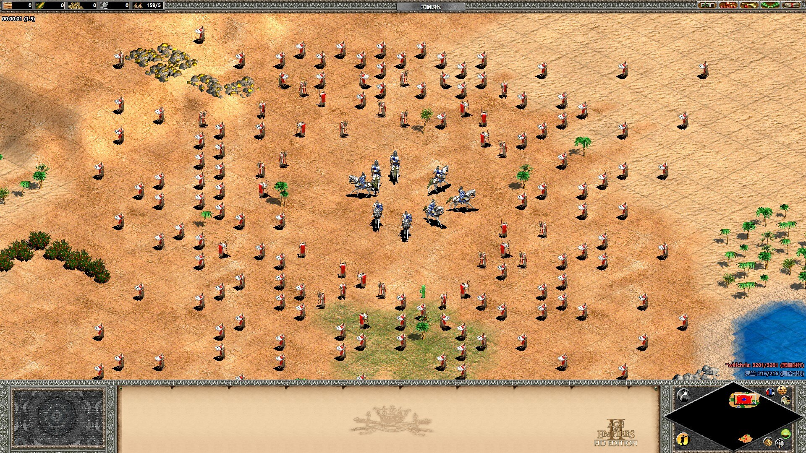

Games¶
Important
My favorite game genre: Strategy (RTS and tower defense); Traditional RPG; Racing.
My favorite games:
Age of Empires 2. I have been playing it for ~20 years.
The Witcher 3. The first 3A RPG game I purchased on Steam. I took hundreds of screenshots in the game play.
First PC game I liked: Virtual Cop (played it around 2000).
Games with longest playing time: Warframe and World of Warships.
Most played games with friends:
In local network: Age of Empires 2, Counter-Strike 1.6, and Don't Starve.
Online: League of Legends (thogh I didn't really like it).
Most impressed game on classic game console: Super Mario Bros.
Most played multiplayer game in my childhood: Metal Slug.
My Story with Computer Games¶
I should be considered as those who early access to the computer among my peers. In 1999 or earlier, when I was about 5 years old, my family purchased a desktop computer. That's when I was introduced to computers.
At that time, the computer at home was running Windows 95/98. The monitor looked like a square, the computer chasis was placed horizontally, and floppy disks were used to store files - some of my friends of the same age who were late to computers don't even have these memories at all, because the shape of computers changed so quickly afterwards.
Note
I was particularly impressed with the floppy disk, as it really was a nice detachable (please don't) toy for me at that age. DISCLAIMER: No data was damaged during my disassembly. Because my father put all the floppies with data out of my reach, all I could get were empty floppies.
But soon I matured and stopped playing with such boring toys as floppy disks; because apparently the little ball that can be taken out of the mouse is much more interesting.
I can still remember that the first graphic game I got to play on the Windows 98 computer in my home was Virtua Cop (Chinese name: "VR特警"), a first-person shooter game released by Sega in 1994.
Laptops that I have used:
The first laptop I saw was a Lenovo brand. It was my father's silver laptop, a top-level spec at the time, with 1GB of RAM.
I first officially owned a laptop when I graduated from high school in 2012. It was an ASUS notebook table fitted with an i7-4700HQ Intel processor. Its motherboard was damaged while viewing an external hard drive in 2015.
One of my subsequent laptops was an MSI QE62 purchased in late 2015, at a time when gaming/performance laptops were popular. It was of incredibly good quality. After 6 years of intense daily (code, gaming & video) use, it only came with a damaged keyboard & mechanical hard drive.
I added an NVME SSD to it, so I needed to turn on the fan to get it to cool properly under high load. i7-6700HQ processors are not worth mentioning these days, but the GTX 960M graphics card can still handle most of my graphics or and machine learning tasks.
The MSI laptop still works (as of 2022) but it is too heavy to carry. I got a Lenovo C740 transforming laptop in late 2019. Thin and light, long battery life, reverse foldable touch screen, and 16GB RAM. A very nice portable computer.
Afterglow of Game Disks¶
At the beginning of the 2000s, the market for selling game CDs was very messy. It was hard to tell whether the game discs were genuine or not from their appearance, but nowadays, if you recall, they were probably mostly pirated.
Through these game CDs/DVDs, I was exposed to many single-player games. The games that I still remember include: Beachhead 2002 (抢滩登录2002), Delta Force (三角洲部队), Hitman: Codename 47 (杀手代号47), DemonStar (恶魔之星, once mistranslated as 雷电3)... Wait, why are they all shooting games? Well, ask my father, because I didn't have the pocket money to buy the game discs at the time.
One of the major drawbacks of the game discs is that most of them just contain single player games. So, although we felt that computer games were only just becoming familiar to everyone by way of game discs, the era of game discs had actually come to an end. With the construction of the Internet and incoming LAN games, PC game CDs soon ceased to be popular and almost disappeared into history.
LAN Games: Flash in the Pan¶
With the development of the Internet, online gaming in LAN network has become possible. Since it is difficult to have multiple computers in an individual's home, this has contributed to the popularity of Internet cafes to some extent.
The uncrowned king of the LAN gaming era is probably the first-person shooters (FPS) represented by Half-Life (半条命/半衰期) and Counter-Strike (CS, 反恐精英). They were both developed by Valve, the parent company of the Steam gaming platform. These games had overwhelming dominance in the LAN gaming world at the time. If you head to an Internet cafe, you can see almost half of the players playing them.
However, I was no longer a fan of shooting games at the time, probably because I had tried too many FPS game CDs at home (laughs). What I noticed was that the other half of the people in the Internet cafe were playing: that is, real-time strategy (RTS) games.
It was around 2003 that I first encountered the computer game I was deeply obsessed with, and that was Age of Empires 2 (帝国时代2, AOE 2). It is no exaggeration to say that RTS games were the only game genre that could compete with shooters at that time. And the three kings of the RTS world are:
Starcraft (星际争霸) and Warcraft (魔兽争霸) by Blizzard, who was famous for its World of Warcraft (魔兽世界);
Command & Conquer: Red Alert (命令与征服：红色警戒) by EA, who was famous for its FIFA, Need for Speed (极品飞车) and many others;
Age of Empires series by the Ensemble Studios under Microsoft, who was later developed Halo Wars (光环战争).
Why there are four games for the three kings? Yes, a common knowledge is that three kings are usually four.
Age of Empires 2 reached the peak of its popularity in its history after its The Conquerors expansion spread out. That is also my most favorite version of AOE. Unfortunately, its sequel, Age of Empires 3 in 2005, which was once expected by players to be the last hope to save the RTS edifice from falling, turned out to be a work with only graphics quality but collapsed gameplay. Players were so disappointed that they refused to accept a work like Age of Empires 3, and still used Age of Empires 2 in LAN gaming as well as in all competitive matches.
Here is a screenshot from the "Wololo" legion in AOE2:
{kind=link}
I've never been a fan of the third generation either. Even though my handling level has dropped dramatically now (which is almost fatal for RTS game player versus player), I still love Age of Empires 2, keep it installed on my computer and will open it up now and then to play against different levels of AI. Even though my handling level has dropped dramatically now (which is almost fatal for RTS game player versus player), I still love Age of Empires 2, keep it installed on my computer and will open it up now and then to play against different levels of AI. The best I could do was to beat the "barbarian" AI (no cheating) in a 1 vs 1 game, but I probably can't even beat the extremely hard default AI now.
LAN games were overwhelmed by the onslaught of Internet games that came after. As of 2022, only Warcraft and Age of Empires are still maintaining gameplay updates among the RTS giants of yesteryear. Although I still don't like shooting games, Counter-Strike is probably the most shining symbol that has been passed down from that era.
Online Games: Ups and Downs¶
For a long time after 2005, Internet games became the absolute topic of domination among our group of boys. It was very difficult for kids of that era to resist the temptation of being able to communicate online in these games when they couldn't meet their friends in person.
Before 2006, the only online games that I have played for a long time is Paopaotang (泡泡堂). I actually found Fantasy Westward Journey (梦幻西游) interestring, but it is very time consuming AND costly, so forget it.
During my middle school, I liked KartRider (跑跑卡丁车) most. I had been practicing my in-game drifting skills for a while, just to get a timing score that I could show off to my friends in the maps Forest Hairpin (森林发卡) and Mine Twist and Slide (矿山曲折滑坡).
MapleStory (冒险岛) was also popular at that time, but that's a game you have to play with friends to beat the boredom of grinding and tasks.
Actually many of my friends were playing World of Warcraft (魔兽世界, WOW) during the time. I like MMORPG-style games, but you need to pay for online playtime in WOW. Come on, in those days when video games were seen as a real enemy to children's health, my family would not give me money to keep throwing into a video game. My play time was in fact quite limited, so unfortunately, this kind of large map exploration, multiplayer quest game was not for me at that time.
Because I live on campus during the high school, and at that time the laptop is still somehow considered as luxury, I didn't have laptop in my campus apartment. Thus, I didn't play games in the high school. However, I knew my friends were play DotA or League of Legends (英雄联盟).
When I went to the university, I also played some online games on Steam, like World of Warships (战舰世界).
Mobile Games: A New Era¶
After 2012, When I entered the university, smartphones are developing very fast and their graphics processing units were fully capable of supporting mobile games with gorgeous images. Here is a list of games that I have played for a period time:
Hearthstone (炉石传说): Yes I like card games. Since I felt that the mechanics of Yu-Gi-Oh! (游戏王) and Magic The Gathering (万智牌) are a bit too complicated, I did start playing from Hearthstone.
Fate Grand Order (命运/冠位指定, FGO): Saying FGO is known as a miracle in the ACG background game is not too much. Of course, the playability of FGO itself is not good. I can only say that with the excellent story background of Fate and a strong audience base, DW is almost earning money while lying down and doing little work. By the way, I like Tohsaka Rin (远坂凛) because I watched Fate series anime, not because of FGO.
Warship Girls R / Azur Lane (战舰少女R / 碧蓝航线): I had a great fascination with war games for a while, probably starting with World of Warships. Battleships (including aircraft carriers) are probably the largest self-propelled weapons ever built by mankind, and it is amazing to say that human technology has reached such extremes in the creation of weapons. Battleship personification is a subculture born from Kantai Collection (舰队收藏, KanColle); although this sounds a bit weird, it does allow one to gain more insight into that grand history where battleships were king. However, warships as weapons may represent killing and aggression, or defense and resistance; we need to be clear about the role they have played in history.
Arknights (明日方舟)：I played it becuase I thought it would be a tower defense game like Plants vs Zombies; but in reality, you can't trust any card-drawing game to advertise and boast about itself. But anyway, it can barely be considered a mobile game in the puzzle category.
Even though mobile games have ushered in a new era, I still enjoy traditional computer games some. Many mobile games are completely money-oriented and give up too much storytelling and gameplay for that reason.